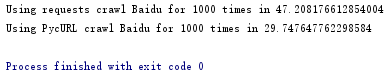

<!DOCTYPE html>
<html>
<head><meta name="generator" content="Hexo 3.9.0">
  <meta charset="utf-8">
  
<!-- Google Analytics -->
<script type="text/javascript">
(function(i,s,o,g,r,a,m){i['GoogleAnalyticsObject']=r;i[r]=i[r]||function(){
(i[r].q=i[r].q||[]).push(arguments)},i[r].l=1*new Date();a=s.createElement(o),
m=s.getElementsByTagName(o)[0];a.async=1;a.src=g;m.parentNode.insertBefore(a,m)
})(window,document,'script','//www.google-analytics.com/analytics.js','ga');

ga('create', 'UA-86850493-1', 'auto');
ga('send', 'pageview');

</script>
<!-- End Google Analytics -->


  
  <title>在python中使用pycurl替代requests来提高网页抓取效率 | Geek boood&#39;s blog</title>
  <meta name="viewport" content="width=device-width, initial-scale=1, maximum-scale=1">
  <meta name="description" content="在写爬虫的时候，有时感觉requests库的抓取效率好低。在大规模爬取网页的时候，使用PycURL可以有效提高效率。">
<meta property="og:type" content="article">
<meta property="og:title" content="在python中使用pycurl替代requests来提高网页抓取效率">
<meta property="og:url" content="https://geekboood.github.io/2017/02/03/在Python中使用PycURL替代requests来提高网页抓取效率/index.html">
<meta property="og:site_name" content="Geek boood&#39;s blog">
<meta property="og:description" content="在写爬虫的时候，有时感觉requests库的抓取效率好低。在大规模爬取网页的时候，使用PycURL可以有效提高效率。">
<meta property="og:locale" content="default">
<meta property="og:image" content="https://geekboood.github.io/2017/02/03/在Python中使用PycURL替代requests来提高网页抓取效率/1.png">
<meta property="og:updated_time" content="2019-07-31T04:07:45.561Z">
<meta name="twitter:card" content="summary">
<meta name="twitter:title" content="在python中使用pycurl替代requests来提高网页抓取效率">
<meta name="twitter:description" content="在写爬虫的时候，有时感觉requests库的抓取效率好低。在大规模爬取网页的时候，使用PycURL可以有效提高效率。">
<meta name="twitter:image" content="https://geekboood.github.io/2017/02/03/在Python中使用PycURL替代requests来提高网页抓取效率/1.png">
  
    <link rel="alternate" href="/atom.xml" title="Geek boood&#39;s blog" type="application/atom+xml">
  
  
    <link rel="icon" href="/favicon.png">
  
  
    <link href="//fonts.googleapis.com/css?family=Source+Code+Pro" rel="stylesheet" type="text/css">
  
  <link rel="stylesheet" href="/css/style.css">
</head>
</html>
<body>
  <div id="container">
    <div id="wrap">
      <header id="header">
  <div id="banner"></div>
  <div id="header-outer" class="outer">
    <div id="header-title" class="inner">
      <h1 id="logo-wrap">
        <a href="/" id="logo">Geek boood&#39;s blog</a>
      </h1>
      
    </div>
    <div id="header-inner" class="inner">
      <nav id="main-nav">
        <a id="main-nav-toggle" class="nav-icon"></a>
        
          <a class="main-nav-link" href="/">Home</a>
        
          <a class="main-nav-link" href="/archives">Archives</a>
        
      </nav>
      <nav id="sub-nav">
        
          <a id="nav-rss-link" class="nav-icon" href="/atom.xml" title="RSS Feed"></a>
        
        <a id="nav-search-btn" class="nav-icon" title="Search"></a>
      </nav>
      <div id="search-form-wrap">
        <form action="//google.com/search" method="get" accept-charset="UTF-8" class="search-form"><input type="search" name="q" class="search-form-input" placeholder="Search"><button type="submit" class="search-form-submit">&#xF002;</button><input type="hidden" name="sitesearch" value="https://geekboood.github.io"></form>
      </div>
    </div>
  </div>
</header>
      <div class="outer">
        <section id="main"><article id="post-在Python中使用PycURL替代requests来提高网页抓取效率" class="article article-type-post" itemscope itemprop="blogPost">
  <div class="article-meta">
    <a href="/2017/02/03/在Python中使用PycURL替代requests来提高网页抓取效率/" class="article-date">
  <time datetime="2017-02-02T16:00:00.000Z" itemprop="datePublished">2017-02-03</time>
</a>
    
  </div>
  <div class="article-inner">
    
    
      <header class="article-header">
        
  
    <h1 class="article-title" itemprop="name">
      在python中使用pycurl替代requests来提高网页抓取效率
    </h1>
  

      </header>
    
    <div class="article-entry" itemprop="articleBody">
      
        <p>在写爬虫的时候，有时感觉requests库的抓取效率好低。在大规模爬取网页的时候，使用PycURL可以有效提高效率。</p>
<a id="more"></a>
<h2 id="PycURL使用简介"><a href="#PycURL使用简介" class="headerlink" title="PycURL使用简介"></a>PycURL使用简介</h2><p>在这里使用了官方的例程，适用于Python3\</p>
<figure class="highlight plain"><table><tr><td class="gutter"><pre><span class="line">1</span><br><span class="line">2</span><br><span class="line">3</span><br><span class="line">4</span><br><span class="line">5</span><br><span class="line">6</span><br><span class="line">7</span><br><span class="line">8</span><br><span class="line">9</span><br><span class="line">10</span><br><span class="line">11</span><br><span class="line">12</span><br></pre></td><td class="code"><pre><span class="line">import pycurl </span><br><span class="line">from io import BytesIO</span><br><span class="line">buffer = BytesIO() </span><br><span class="line">c = pycurl.Curl() </span><br><span class="line">c.setopt(c.URL, &apos;http://pycurl.io/&apos;) </span><br><span class="line">c.setopt(c.WRITEDATA, buffer) </span><br><span class="line">c.perform() c.close()</span><br><span class="line">body = buffer.getvalue() </span><br><span class="line"># Body is a byte string. </span><br><span class="line"># We have to know the encoding in order to print it to a text file </span><br><span class="line"># such as standard output. </span><br><span class="line">print(body.decode(&apos;iso-8859-1&apos;))</span><br></pre></td></tr></table></figure>

<p>来自<a href="http://pycurl.io/docs/latest/quickstart.html#retrieving-a-network-resource" target="_blank" rel="noopener">http://pycurl.io/docs/latest/quickstart.html#retrieving-a-network-resource</a><br>你还可以设置许多选项，比如代理，忽略SSL证书检查等。具体选项都在这个网页里<br><a href="https://curl.haxx.se/libcurl/c/curl_easy_setopt.html" target="_blank" rel="noopener">https://curl.haxx.se/libcurl/c/curl_easy_setopt.html</a><br>在设置选项时要去掉CURLOPT_前缀，比如CURLOPT_URL写为URL</p>
<p>接下来对PycURL和requests抓取效率进行测试，测试内容为抓取百度主页1000次，代码如下</p>
<figure class="highlight plain"><table><tr><td class="gutter"><pre><span class="line">1</span><br><span class="line">2</span><br><span class="line">3</span><br><span class="line">4</span><br><span class="line">5</span><br><span class="line">6</span><br><span class="line">7</span><br><span class="line">8</span><br><span class="line">9</span><br><span class="line">10</span><br><span class="line">11</span><br><span class="line">12</span><br><span class="line">13</span><br><span class="line">14</span><br><span class="line">15</span><br><span class="line">16</span><br><span class="line">17</span><br><span class="line">18</span><br><span class="line">19</span><br><span class="line">20</span><br><span class="line">21</span><br><span class="line">22</span><br><span class="line">23</span><br></pre></td><td class="code"><pre><span class="line">import requests</span><br><span class="line">import time</span><br><span class="line">import pycurl</span><br><span class="line">from io import BytesIO</span><br><span class="line">url = &apos;http://www.baidu.com/&apos;</span><br><span class="line">c = pycurl.Curl()</span><br><span class="line">data = BytesIO()</span><br><span class="line">c.setopt(c.DNS_USE_GLOBAL_CACHE, True)</span><br><span class="line">c.setopt(c.URL, url)</span><br><span class="line">c.setopt(c.WRITEFUNCTION, data.write)</span><br><span class="line">def pycurl_crawl():</span><br><span class="line">    c.perform()</span><br><span class="line">def requests_crawl():</span><br><span class="line">    r = requests.get(url)</span><br><span class="line">t1 = time.time()</span><br><span class="line">for i in range(1,1000):</span><br><span class="line">    requests_crawl()</span><br><span class="line">print(&quot;Using requests crawl Baidu for 1000 times in&quot;,time.time() - t1)</span><br><span class="line">t2=time.time()</span><br><span class="line">for i in range(1,1000):</span><br><span class="line">    pycurl_crawl()</span><br><span class="line">print(&quot;Using PycURL crawl Baidu for 1000 times in&quot;,time.time() - t2)</span><br><span class="line">c.close()</span><br></pre></td></tr></table></figure>

<p>测试结果如下<br><br>看起来效率提升了不少。在使用PycURL抓取时，基本占满了我50mbps的带宽，如果你使用100mbps的宽带，也许还能再提升一些。<br>在stackoverflow上有一篇更加详细的文章，链接如下<br><a href="https://stackoverflow.com/questions/15461995/python-requests-vs-pycurl-performance" target="_blank" rel="noopener">https://stackoverflow.com/questions/15461995/python-requests-vs-pycurl-performance</a></p>

      
    </div>
    <footer class="article-footer">
      <a data-url="https://geekboood.github.io/2017/02/03/在Python中使用PycURL替代requests来提高网页抓取效率/" data-id="cjyqqoqux00012usfmtgag8fd" class="article-share-link">Share</a>
      
      
    </footer>
  </div>
  
    
<nav id="article-nav">
  
    <a href="/2017/02/13/在Python中使用pytesseract进行简单的OCR/" id="article-nav-newer" class="article-nav-link-wrap">
      <strong class="article-nav-caption">Newer</strong>
      <div class="article-nav-title">
        
          在python中使用pytesseract进行简单的OCR
        
      </div>
    </a>
  
  
    <a href="/2017/02/03/Orange-Pi-Zero-使用USB千兆网卡及速度测试/" id="article-nav-older" class="article-nav-link-wrap">
      <strong class="article-nav-caption">Older</strong>
      <div class="article-nav-title">Orange-Pi-Zero-使用USB千兆网卡及速度测试</div>
    </a>
  
</nav>

  
</article>

</section>
        
          <aside id="sidebar">
  
    

  
    

  
    
  
    
  <div class="widget-wrap">
    <h3 class="widget-title">Archives</h3>
    <div class="widget">
      <ul class="archive-list"><li class="archive-list-item"><a class="archive-list-link" href="/archives/2019/07/">July 2019</a></li><li class="archive-list-item"><a class="archive-list-link" href="/archives/2017/09/">September 2017</a></li><li class="archive-list-item"><a class="archive-list-link" href="/archives/2017/03/">March 2017</a></li><li class="archive-list-item"><a class="archive-list-link" href="/archives/2017/02/">February 2017</a></li><li class="archive-list-item"><a class="archive-list-link" href="/archives/2017/01/">January 2017</a></li><li class="archive-list-item"><a class="archive-list-link" href="/archives/2015/07/">July 2015</a></li></ul>
    </div>
  </div>


  
    
  <div class="widget-wrap">
    <h3 class="widget-title">Recent Posts</h3>
    <div class="widget">
      <ul>
        
          <li>
            <a href="/2019/07/30/BERT相关的一些实践/">BERT相关的一些实践</a>
          </li>
        
          <li>
            <a href="/2019/07/30/用Kubernetes建立实验集群/">用Kubernetes建立实验集群</a>
          </li>
        
          <li>
            <a href="/2019/07/30/移动端深度学习的现状与分析/">移动端深度学习的现状与分析</a>
          </li>
        
          <li>
            <a href="/2017/09/04/微博与Elastic的亿级数据实践/">微博与elastic的亿级数据实践</a>
          </li>
        
          <li>
            <a href="/2017/03/25/使用微博语料训练词向量/">使用微博语料训练词向量</a>
          </li>
        
      </ul>
    </div>
  </div>

  
</aside>
        
      </div>
      <footer id="footer">
  
  <div class="outer">
    <div id="footer-info" class="inner">
      &copy; 2019 Geek boood<br>
      Powered by <a href="http://hexo.io/" target="_blank">Hexo</a>
    </div>
  </div>
</footer>
    </div>
    <nav id="mobile-nav">
  
    <a href="/" class="mobile-nav-link">Home</a>
  
    <a href="/archives" class="mobile-nav-link">Archives</a>
  
</nav>
    

<script src="//ajax.googleapis.com/ajax/libs/jquery/2.0.3/jquery.min.js"></script>


  <link rel="stylesheet" href="/fancybox/jquery.fancybox.css">
  <script src="/fancybox/jquery.fancybox.pack.js"></script>


<script src="/js/script.js"></script>


  </div>
</body>
</html>